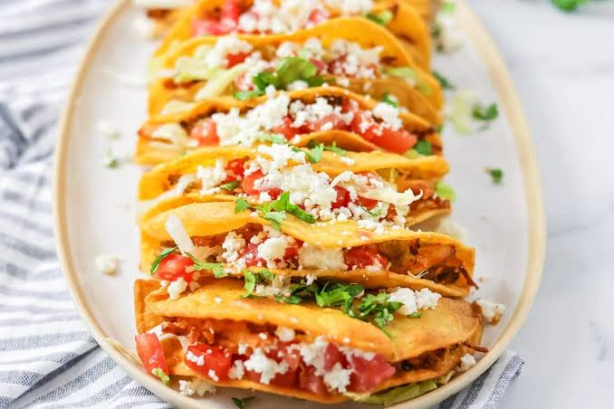
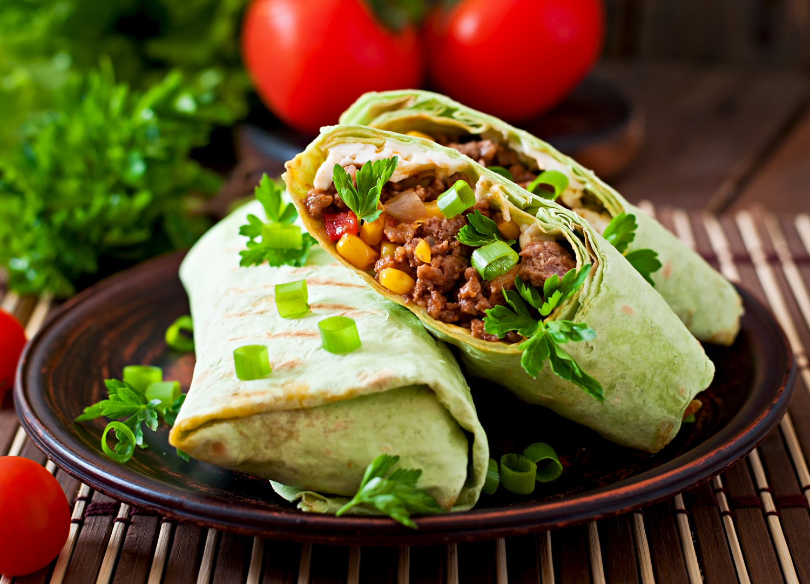
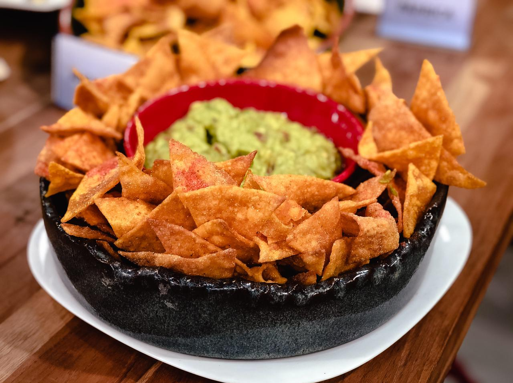

Sobre a culinária mexicana
A culinária mexicana é conhecida pelo sabor marcante, tradição e simplicidade. Utilizando ingredientes clássicos e comuns, como carne moída, tomates, folhas variadas, a famosa guacamole, uma espécie de molho com abacate e diversos temperos e, principalmente, bastante pimenta.
Os pratos mais conhecidos são os tacos, burritos, nachos e guacamole são apreciados ao redor de todo o mundo, tornando a culinária Mexicana uma das mais famosas do planeta, principalmente nas Américas.
Pratos populares

Tacos
Provavelmente o mais famoso prato mexicano, é feito com uma tortilha recheada com carnes, molhos e vegetais dobrada ao meio.

Burritos
Uma espécie de sanduíche, tortilhas enroladas em volta de vários tipos de recheio.

Nachos
Tortilhas crocantes, fritas ou assadas, servidas com diversos temperos e molhos.